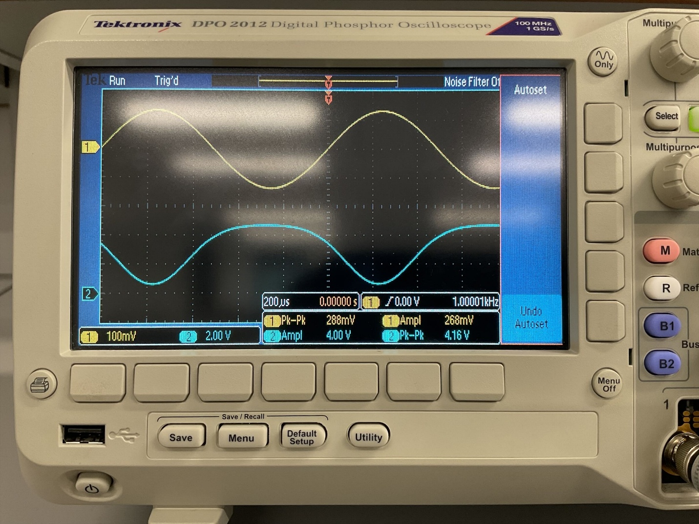
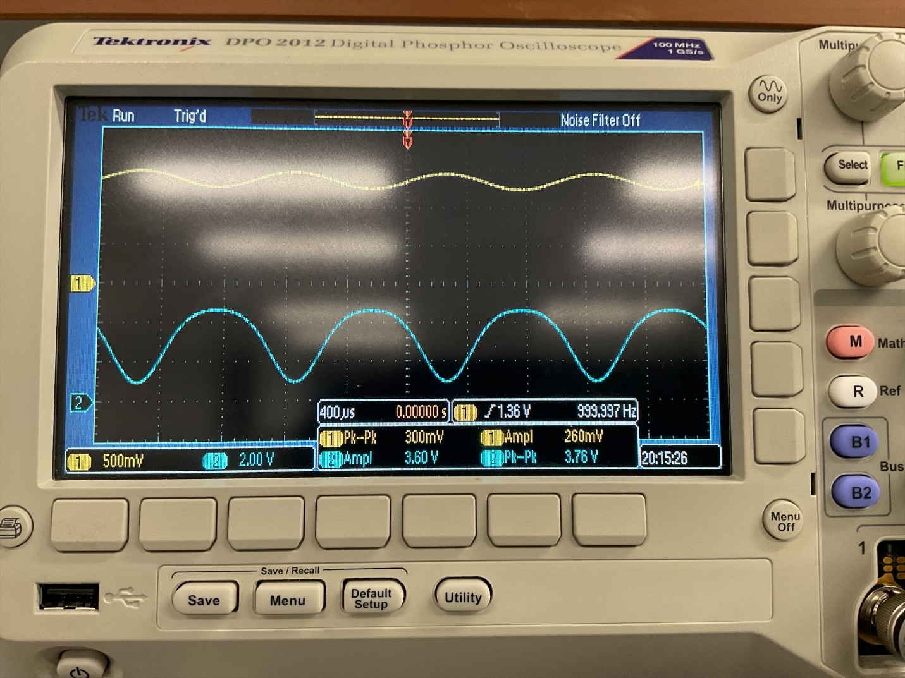
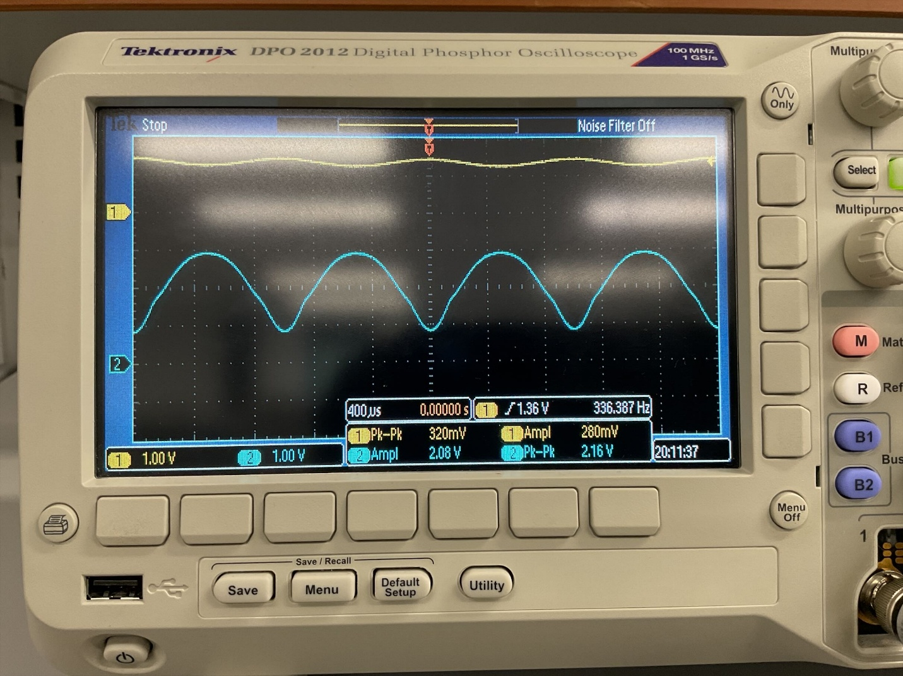

Two-Stage MOSFET LED Driver
Overview
I designed, biased, and built a two-stage MOSFET amplifier to drive an LED: a common-source stage for voltage gain, cascaded into a common-drain (source-follower) stage for current drive, so the load doesn't drag the amplifier's operating point around. I built and measured the design twice — once for a red LED, once for a green one — to see how the ~0.4 V difference in forward voltage between the two colors propagates through the whole bias chain.
- Designed a two-stage amplifier (common-source M1 + common-drain M2) in 2N7000 MOSFETs to drive an LED at ~1 mA quiescent current
- Characterized each MOSFET's threshold voltage and DC transfer curve before biasing, since device-to-device variation shifts the whole design
- Calculated gate bias, drain resistor, and voltage-divider network for both a 100 Ω and 500 Ω source resistor, then built and measured the 100 Ω version for each LED color
- Measured DC operating points (VGS, VDS, VS) and verified they landed within 20% of the design targets
- Drove the input with a 1 kHz, ~0.3 Vpp sine wave and measured stage-1 gain and full-circuit gain on a Tektronix DPO 2012, comparing against the hand-calculated small-signal gain
Circuit
Stage 1 is a common-source amplifier: M1 with a voltage-divider gate bias (R1/R2), a drain resistor RD setting the ~1 mA bias current, and an input coupling capacitor sized for the 1 kHz signal band. Its output feeds directly into the gate of M2, which forms stage 2: a common-drain / source-follower with the LED and its series resistor RS in the source leg. The gate bias of M2 is set by the DC output of stage 1, so the two stages aren't independent — getting the LED's operating point right meant working backward from the LED's forward voltage, through M2's source-follower drop, to the exact DC level stage 1 needed to output.
Both MOSFETs measured a threshold voltage of about 1.5 V. The red LED turned on around 1.7 V and reached comfortable brightness around 2.4–2.9 V (depending on RS); the green LED needed roughly 0.2 V more at every step, which is exactly what you'd expect from its wider bandgap. That shift is what forced the two designs (Task 2 vs. Task 3) to use different bias points even though the topology was identical.
| Design target | Red LED | Green LED |
|---|---|---|
| VG2 (M2 gate bias, RS = 100 Ω) | 3.7 V | 3.85 V |
| RD (stage 1 drain resistor, RS = 100 Ω) | 1.3 kΩ | 1.2 kΩ |
| VG1 (M1 gate bias) | 1.39 V | 1.38 V |
| Voltage divider (R1 / R2) | 26 kΩ / 10 kΩ | 26 kΩ / 10 kΩ |
| Coupling capacitor | 0.02 µF (from 1/(2π·1000·Rin) at 1 kHz) | |
Results
DC operating point
With RS = 100 Ω, the built circuit landed within a few percent of every design target — VGS1 measured 1.39 V on both LED builds (matching the design exactly), and VDS1/VS2 tracked within the 20% tolerance the lab asked for. That gave me confidence the small-signal measurements that followed were happening around the intended operating point, not some drifted-off region of the MOSFET's I-V curve.
Small-signal gain — Red LED


At 1 kHz, stage 1 measured a peak-to-peak gain of about −14.4 (4.16 Vpp out for 288 mVpp in), close to the −13 hand-calculated from gmRD. The full two-stage gain measured about 7.5, notably below the ~11.7 predicted by simply multiplying the stage-1 and stage-2 gains. That gap is the source follower's finite output impedance and the LED's own nonlinear I-V loading the node harder than the small-signal model assumes — the kind of thing that's easy to write down analytically and then watch disagree with the scope.
Small-signal gain — Green LED


Same pattern here: stage 1 gain measured around −12.5 to −13.9 depending on whether you use the peak-to-peak or amplitude readout, bracketing the −12 calculated value. The full-circuit gain again measured lower than the calculated ~11.8, landing around 6.8. The consistency of that gap across both LED colors is what convinced me it's a real loading effect and not measurement noise on one run.
Discussion
The red and green LEDs behaved as predicted by their different forward voltages: green needed roughly 0.2–0.3 V more at every stage to reach the same qualitative brightness, which shifted the whole bias chain up without changing the topology. Between the two RS values I designed for, 100 Ω drove more current and a brighter LED but pulled the drain voltage down harder; 500 Ω limited current and dimmed the LED, but kept the second stage sitting in a more linear region with more headroom for the signal swing. That's the actual design tradeoff in a circuit like this — brightness vs. how much clean signal swing you can pass through the output stage — and it's not something you'd see just by looking at the DC bias equations in isolation.